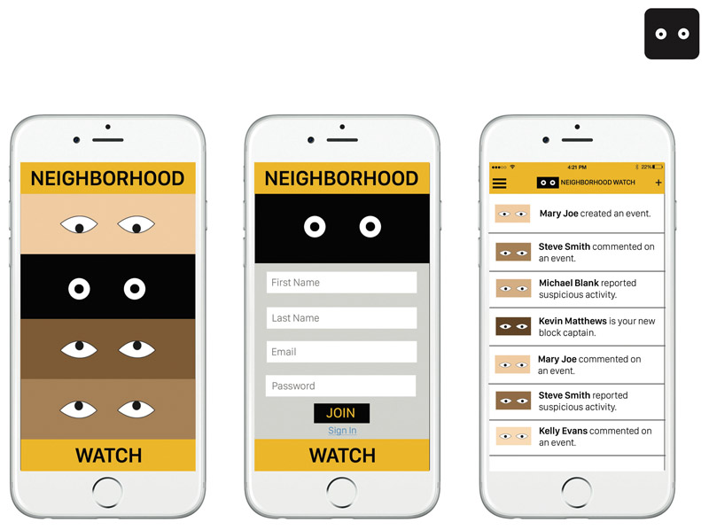
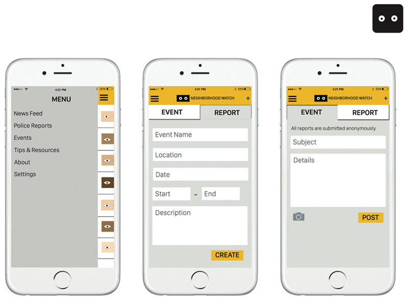
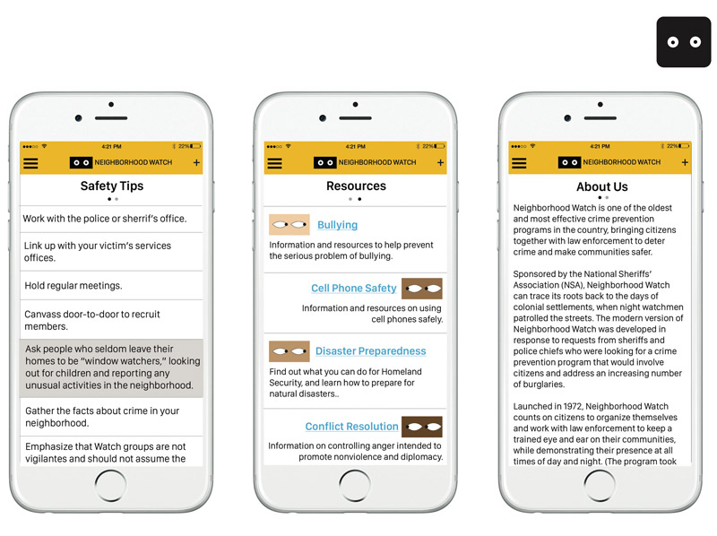

The goal of this project was to design a new identity and sign for the Neighborhood Watch Association. The primary sign that is currently used was designed in the ‘70s and felt a bit outdated. A redesign as well as an accompanying mobile app could not only increase participation in existing participants, but also engage new ones.
The mobile app would use geolocation to alert users about reports in their area as well as any non-crime related events or announcements from others in their neighborhood.
 Additionally, users can quickly access Safety Tips as well as Resources related to safety and prevention.
All of the work shown here was completed by myself.